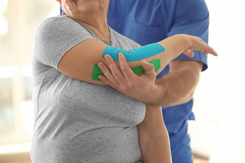

Beneficios de la Fisioterapia Geriátrica
El propósito principal es garantizar la autonomía de la persona mayor.
Son múltiples los beneficios que la fisioterapia geriátrica puede aportar al paciente de edad avanzada. Podemos dividir estos beneficios en beneficios físicos y beneficios psicológicos.
Beneficios físicos
La fisioterapia geriátrica ayuda a:
- Reducir las molestias y el dolor
- Reeducar la marcha
- Recuperar y fortalecer la masa muscular
- Aumentar la flexibilidad
- Mejorar el control postural
- Mejorar la sensibilidad y la capacidad articular
- Mejorar la coordinación y el equilibrio (evitando así posibles caídas)
Beneficios psicológicos
- Hace que la persona tenga más energía y confianza para hacer cosas
- Combate el estrés y la ansiedad.
- Mejora la calidad del sueño
